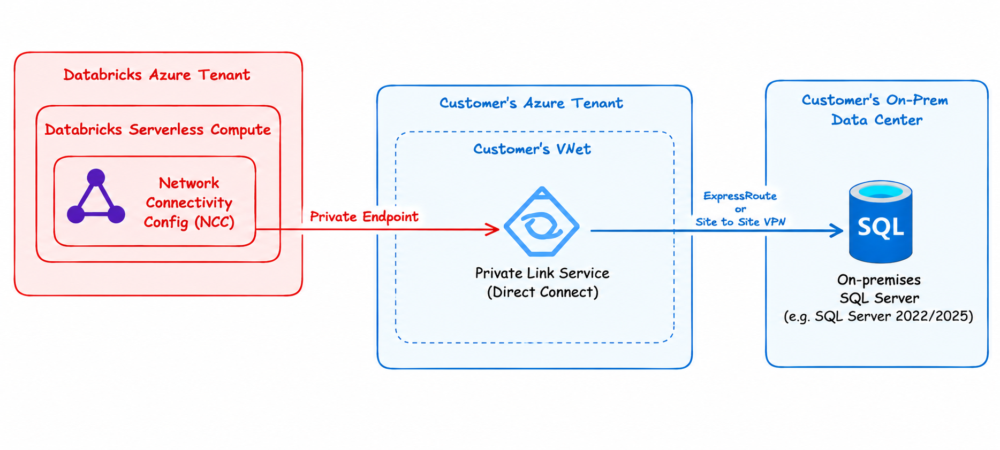
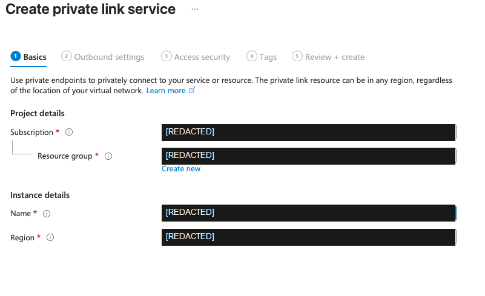
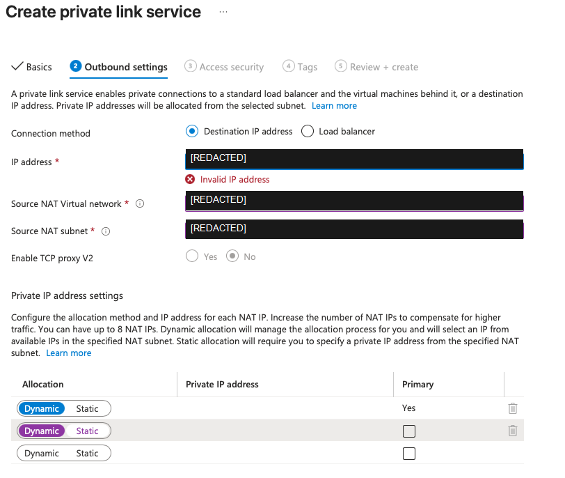
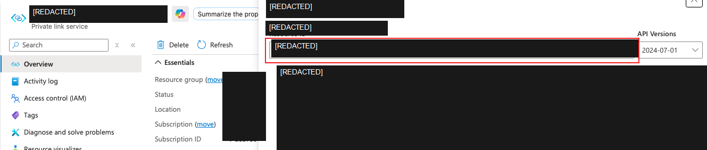
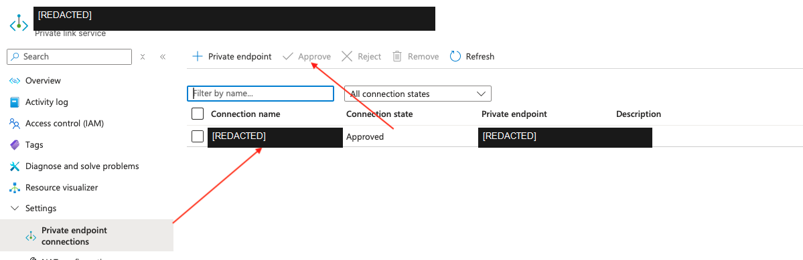
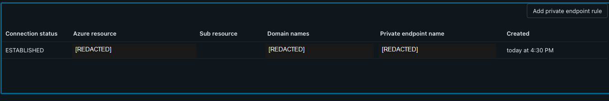
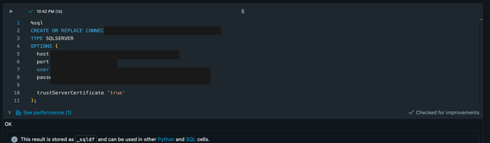
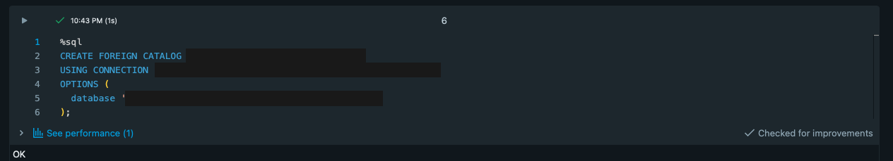
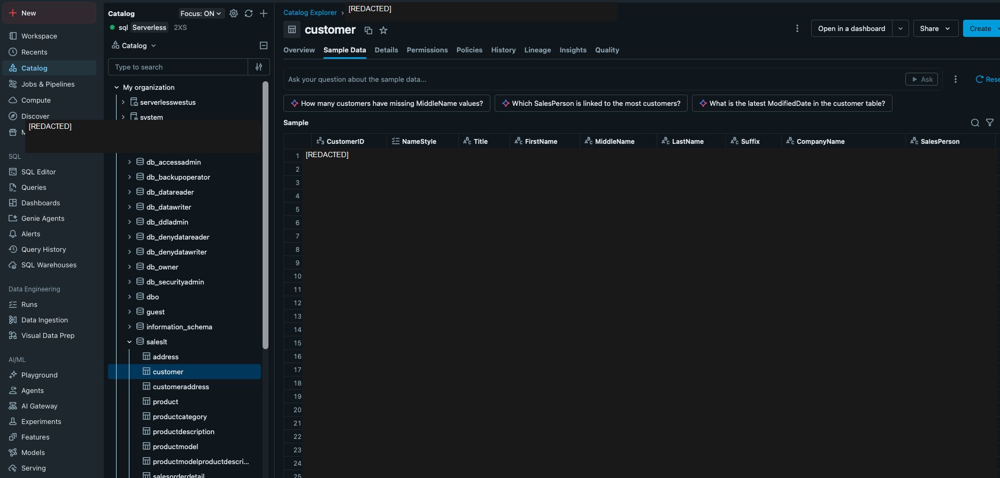
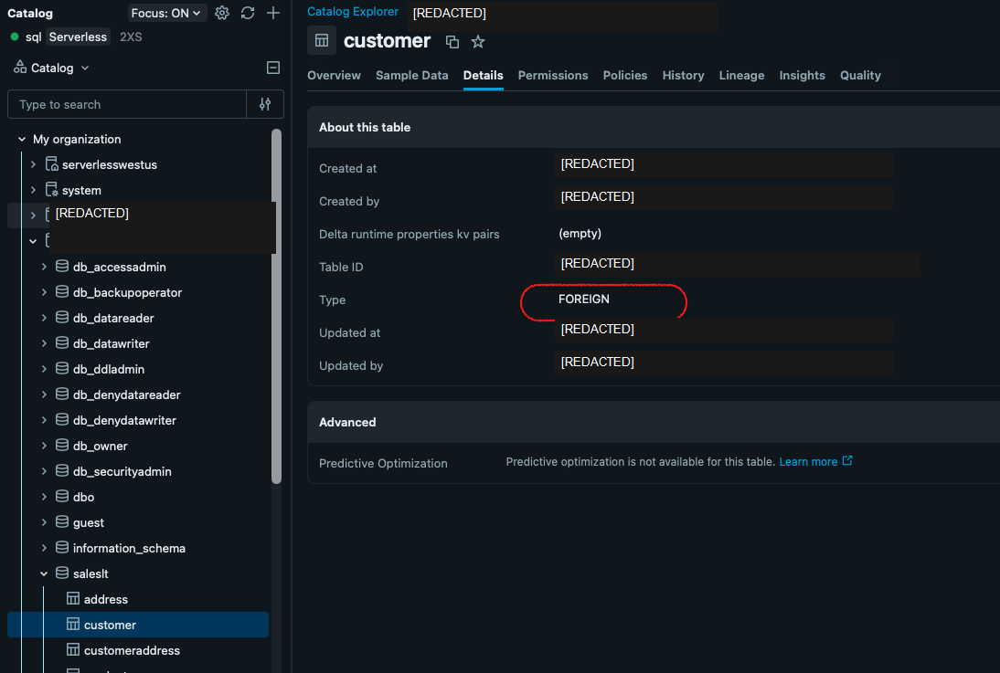

Connecting Databricks Serverless to On-Premises SQL Server
This walkthrough follows the supplied implementation guide from Azure Private Link Service creation through Direct Connect, Databricks Network Connectivity Configuration (NCC), and Unity Catalog validation of an on-premises SQL Server.

The private route: Serverless compute to NCC, Private Link Service Direct Connect, customer network, then on-premises SQL.
End-to-end path
The guide builds the private route first, then configures data access through Unity Catalog:
Databricks Serverless → NCC → Private endpoint rule → Azure Private Link Service Direct Connect → Customer VNet → VPN or ExpressRoute → On-premises SQL Server → Unity Catalog connection → Foreign catalog
Before you start
- Confirm the customer VNet can route to the on-premises SQL Server destination.
- Identify the destination's private IP, SQL Server DNS name, port, and database.
- Confirm firewall policy allows the intended database traffic.
- Have permission to create the Azure Private Link Service and configure Databricks account networking and Unity Catalog.
1. Create the Azure Private Link Service
Create the Private Link Service in the customer subscription and VNet that can reach the on-premises destination. Select the resource group, name, and region for your environment. The first screenshot shows the basic creation settings; the Azure-specific values have been redacted.

Private Link Service creation: choose the customer subscription, resource group, name, and region.
2. Configure Direct Connect
Choose the destination IP address connection method, specify the privately routable SQL Server destination, and select the source NAT VNet and subnet. Configure private IP allocation for the service according to the customer network design. The example's address and network names are redacted.

Direct Connect outbound settings: destination IP, source NAT network, subnet, and private IP allocation.
3. Configure Databricks account networking
In the Databricks account console, open Security → Networking → Network connectivity configurations. Create or select the NCC for the Serverless region, then associate the Databricks workspace with it. The screenshot shows the account-level configuration list; configuration names are redacted.

Databricks account console: Network Connectivity Configurations for Serverless.
4. Add the Private Link Service rule
In the NCC, add a private endpoint rule that targets the Private Link Service resource ID. Supply the SQL Server domain name that the Unity Catalog connection will use. To locate the target resource ID, open the Private Link Service resource details in Azure; the identifier and resource names in this screenshot are redacted.

Locate the Private Link Service resource ID for the NCC rule; environment-specific identifiers are hidden.
5. Approve and verify the private endpoint
On the customer Azure side, open the Private Link Service's private endpoint connections and approve the pending Databricks request. Return to the NCC and refresh the rule until its connection status is ESTABLISHED. Approval completes the endpoint handshake; it does not validate SQL credentials or database permissions.

Azure Private Link Service: approve the pending private endpoint connection.

Databricks NCC: confirm the private endpoint rule reaches ESTABLISHED.
6. Create the Unity Catalog SQL Server connection
Create a Unity Catalog connection of type SQLSERVER. Set the SQL Server host name, port, user, and password, and apply the certificate-trust option only if it matches your organization's security requirements. The example uses port 1433; replace the host and credentials with approved values and store secrets securely.

Unity Catalog SQL Server connection: the credential and host values are redacted.
7. Create the foreign catalog
Create a foreign catalog using the SQL Server connection and specify the remote database. The guide uses a SQL statement in this form:
CREATE FOREIGN CATALOG <catalog_name> USING CONNECTION <connection_name> OPTIONS ( database '<database_name>' );

Create the foreign catalog from the SQL Server connection; environment-specific names are hidden.
8. Validate the foreign catalog in Catalog Explorer
Open Catalog Explorer and verify that the foreign catalog, remote schema, and tables are visible. The supplied screenshots show a remote customer table and its metadata; customer rows, catalog names, user details, and IDs have been redacted.

Catalog Explorer: browse a table exposed through the foreign catalog.

Table details confirm the selected object is a foreign table.
Validation boundaries
- Private endpoint status: Azure approval and NCC ESTABLISHED confirm the private endpoint lifecycle.
- Unity Catalog connection: Confirms the SQL Server connection configuration and authentication work.
- Foreign catalog: Catalog Explorer visibility confirms the remote database objects are exposed to the intended identity.
Do not copy resource IDs, IP addresses, hostnames, account names, or credentials from screenshots into public examples. Replace the placeholders with values approved for your own environment.